prompt-to-prompt
- [toc]
前言
这一部分主要是聚焦研究在diffusion model生成的过程中Attention map是如何起作用的, 可以用什么样的方法更好的利用attentionmap来控制模型的生成。这个部分最主要的启发工作来源于google的“Prompt-to-Prompt Image Editing with Cross Attention Control”, 也是我们希望复现和学习的文章。
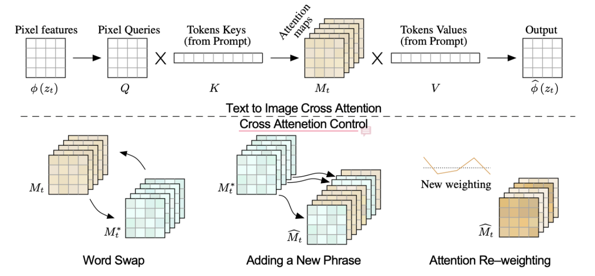
标记说明
Cross Attention map的替换从prompt_edit_tokens_end开始, 到prompt_edit_tokens_start结束
Self Attention map的替换从prompt_edit_spatial_end开始, prompt_edit_spatial_start结束
ss是self Attention inject start的简称, 也即prompt_edit_spatial_start, 而默认的prompt_edit_tokens_end=1.0, 生成过程是1.0 -> 0, 所以map inject 从一开始就开始, 到prompt_edit_spatial_start结束, 例如生成过程50步, prompt_edit_spatial_start=0.8, 这意味着前50*(1-0.8)=10步是有map inject, 后续则没有。如果prompt_edit_spatial_start=prompt_edit_spatial_end=0, 则全称无inject, 生成src原图, 即图片矩阵最右下角的图片。
cs是cross Attention inject start的简称, 也即prompt_edit_tokens_start, 作用机制同理。
ce是corss Attention inject end的简称, 也即prompt_edit_tokens_end。
se是self Attention inject end的简称, 也即prompt_edit_spatial_end。
复现和熟悉过程
之前在github上看到了有人对google的这篇文章进行了复现, 在这里进行尝试, 复现他的结果, 然后研究一下他是怎么做, 以及我们可以怎么做吧。直接上代码。
git clone git@github.com:bloc97/CrossAttentionControl.git
pip install torch transformers diffusers==0.4.1 numpy pillow tqdm jupyter
jupyter-notebook
# 如果是ssh在服务器上, 则需要通过ssh传递
jupyter-notebook --no-browser --port=1234 # on server
ssh -NL localhost:1234:localhost:1234 g5 # on your pc, then open link in server jupyter, notice port need to be your host port
跑是能跑的, 不断按shift + enter, 除了模型下载慢一点, 其他都可以。
粗读代码
引入包, load模型
import torch
from transformers import CLIPModel, CLIPTextModel, CLIPTokenizer
from diffusers import AutoencoderKL, UNet2DConditionModel
#NOTE: Last tested working diffusers version is diffusers==0.4.1, https://github.com/huggingface/diffusers/releases/tag/v0.4.1
#Init CLIP tokenizer and model
model_path_clip = "openai/clip-vit-large-patch14"
clip_tokenizer = CLIPTokenizer.from_pretrained(model_path_clip)
clip_model = CLIPModel.from_pretrained(model_path_clip, torch_dtype=torch.float16)
clip = clip_model.text_model
#Init diffusion model
auth_token = "这个是hugging face 的access token" #Replace this with huggingface auth token as a string if model is not already downloaded
model_path_diffusion = "CompVis/stable-diffusion-v1-4"
# 看起来stable diffusion用的diffusion model就是这一个, 但是对于模型参数而言, 不知道他到底下载的是参数的那一部分, 而且用了半精度
# 代码在这里 https://github.com/huggingface/diffusers/blob/main/src/diffusers/models/unet_2d_condition.py
unet = UNet2DConditionModel.from_pretrained(model_path_diffusion, subfolder="unet", use_auth_token=auth_token, revision="fp16", torch_dtype=torch.float16)
# 这看起来就是stable diffusion用的vae
vae = AutoencoderKL.from_pretrained(model_path_diffusion, subfolder="vae", use_auth_token=auth_token, revision="fp16", torch_dtype=torch.float16)
#Move to GPU
device = "cuda"
unet.to(device)
vae.to(device)
clip.to(device)
print("Loaded all models")
写的一些有关attention的函数
import numpy as np
import random
from PIL import Image
from diffusers import LMSDiscreteScheduler # https://github.com/huggingface/diffusers/blob/main/src/diffusers/schedulers/scheduling_lms_discrete.py
# 这个类的代码在这里, 但是具体的作用目前还不知道
from tqdm.auto import tqdm
from torch import autocast # 混合精度的东西
from difflib import SequenceMatcher # 比较两个序列
def init_attention_weights(weight_tuples):
"""
初始化权重, 如果提供了对应的位置的权重, 则替换, 否则全为1
"""
tokens_length = clip_tokenizer.model_max_length
weights = torch.ones(tokens_length)
for i, w in weight_tuples:
if i < tokens_length and i >= 0:
weights[i] = w
# TODO 权重是一个序列长度的一维向量, 被初始化到last_attn_slice_weights, 这是什么东西
for name, module in unet.named_modules():
module_name = type(module).__name__
if module_name == "CrossAttention" and "attn2" in name:
module.last_attn_slice_weights = weights.to(device)
if module_name == "CrossAttention" and "attn1" in name:
module.last_attn_slice_weights = None
def init_attention_edit(tokens, tokens_edit):
"""
"""
tokens_length = clip_tokenizer.model_max_length
mask = torch.zeros(tokens_length)
indices_target = torch.arange(tokens_length, dtype=torch.long) # 0, 1, 2...
indices = torch.zeros(tokens_length, dtype=torch.long) # 0, 0, 0 ...
tokens = tokens.input_ids.numpy()[0] # 字典index?
tokens_edit = tokens_edit.input_ids.numpy()[0]
for name, a0, a1, b0, b1 in SequenceMatcher(None, tokens, tokens_edit).get_opcodes():
if b0 < tokens_length:
if name == "equal" or (name == "replace" and a1-a0 == b1-b0):
mask[b0:b1] = 1
indices[b0:b1] = indices_target[a0:a1]
for name, module in unet.named_modules():
module_name = type(module).__name__
if module_name == "CrossAttention" and "attn2" in name:
module.last_attn_slice_mask = mask.to(device)
module.last_attn_slice_indices = indices.to(device)
if module_name == "CrossAttention" and "attn1" in name:
module.last_attn_slice_mask = None
module.last_attn_slice_indices = None
# TODO 弄清last_attn_slice是什么, sliced_attention, attention两个函数的区别
def init_attention_func():
#ORIGINAL SOURCE CODE: https://github.com/huggingface/diffusers/blob/91ddd2a25b848df0fa1262d4f1cd98c7ccb87750/src/diffusers/models/attention.py#L276
def new_attention(self, query, key, value):
# TODO: use baddbmm for better performance
# query 和 key 通过矩阵乘, 再通过softmax得到attention map
attention_scores = torch.matmul(query, key.transpose(-1, -2)) * self.scale
attn_slice = attention_scores.softmax(dim=-1)
# compute attention output
if self.use_last_attn_slice:
if self.last_attn_slice_mask is not None:
new_attn_slice = torch.index_select(self.last_attn_slice, -1, self.last_attn_slice_indices) # 在单词维度进行选择
attn_slice = attn_slice * (1 - self.last_attn_slice_mask) + new_attn_slice * self.last_attn_slice_mask
else:
attn_slice = self.last_attn_slice
self.use_last_attn_slice = False
# 这一步是在进行edit之前的执行的一次使用原始prompt进行forward，然后保存attn map
if self.save_last_attn_slice:
self.last_attn_slice = attn_slice
self.save_last_attn_slice = False
if self.use_last_attn_weights and self.last_attn_slice_weights is not None:
attn_slice = attn_slice * self.last_attn_slice_weights
self.use_last_attn_weights = False
# 如果没有injection, 则直接再矩阵乘value, 就得到了下一层的输出
hidden_states = torch.matmul(attn_slice, value)
# reshape hidden_states
hidden_states = self.reshape_batch_dim_to_heads(hidden_states)
return hidden_states
def new_sliced_attention(self, query, key, value, sequence_length, dim):
batch_size_attention = query.shape[0]
hidden_states = torch.zeros(
(batch_size_attention, sequence_length, dim // self.heads), device=query.device, dtype=query.dtype
)
slice_size = self._slice_size if self._slice_size is not None else hidden_states.shape[0]
for i in range(hidden_states.shape[0] // slice_size):
start_idx = i * slice_size
end_idx = (i + 1) * slice_size
attn_slice = (
torch.matmul(query[start_idx:end_idx], key[start_idx:end_idx].transpose(1, 2)) * self.scale
) # TODO: use baddbmm for better performance
attn_slice = attn_slice.softmax(dim=-1)
if self.use_last_attn_slice:
if self.last_attn_slice_mask is not None:
new_attn_slice = torch.index_select(self.last_attn_slice, -1, self.last_attn_slice_indices)
attn_slice = attn_slice * (1 - self.last_attn_slice_mask) + new_attn_slice * self.last_attn_slice_mask
else:
attn_slice = self.last_attn_slice
self.use_last_attn_slice = False
if self.save_last_attn_slice:
self.last_attn_slice = attn_slice
self.save_last_attn_slice = False
if self.use_last_attn_weights and self.last_attn_slice_weights is not None:
attn_slice = attn_slice * self.last_attn_slice_weights
self.use_last_attn_weights = False
attn_slice = torch.matmul(attn_slice, value[start_idx:end_idx])
hidden_states[start_idx:end_idx] = attn_slice
# reshape hidden_states
hidden_states = self.reshape_batch_dim_to_heads(hidden_states)
return hidden_states
for name, module in unet.named_modules():
module_name = type(module).__name__
if module_name == "CrossAttention":
module.last_attn_slice = None
module.use_last_attn_slice = False
module.use_last_attn_weights = False
module.save_last_attn_slice = False
# 以下是一个描述器功能, 此后调用module._sliced_attention, 等价于调用new_sliced_attention
# 但是为什么不能直接把函数地址传进去呢, 也就是module._sliced_attention = new_sliced_attention
# 这是因为函数中有参数self,如果按地址传, self也需要显示参数提供, 而使用描述器就可以直接传我们定义的参数了
module._sliced_attention = new_sliced_attention.__get__(module, type(module))
module._attention = new_attention.__get__(module, type(module))
def use_last_tokens_attention(use=True):
for name, module in unet.named_modules():
module_name = type(module).__name__
if module_name == "CrossAttention" and "attn2" in name:
module.use_last_attn_slice = use
def use_last_tokens_attention_weights(use=True):
for name, module in unet.named_modules():
module_name = type(module).__name__
if module_name == "CrossAttention" and "attn2" in name:
module.use_last_attn_weights = use
def use_last_self_attention(use=True):
for name, module in unet.named_modules():
module_name = type(module).__name__
if module_name == "CrossAttention" and "attn1" in name:
module.use_last_attn_slice = use
def save_last_tokens_attention(save=True):
for name, module in unet.named_modules():
module_name = type(module).__name__
if module_name == "CrossAttention" and "attn2" in name:
module.save_last_attn_slice = save
def save_last_self_attention(save=True):
for name, module in unet.named_modules():
module_name = type(module).__name__
if module_name == "CrossAttention" and "attn1" in name:
module.save_last_attn_slice = save
这里我们需要看一下unet中的CrossAttention是如何定义的, 有哪些方法, 以及具体的运算逻辑时怎么样的。
# https://github.com/huggingface/diffusers/blob/main/src/diffusers/models/unet_2d_condition.py
class CrossAttention(nn.Module):
r"""
A cross attention layer.
Parameters:
query_dim (:obj:`int`): The number of channels in the query.
context_dim (:obj:`int`, *optional*):
The number of channels in the context. If not given, defaults to `query_dim`.
heads (:obj:`int`, *optional*, defaults to 8): The number of heads to use for multi-head attention.
dim_head (:obj:`int`, *optional*, defaults to 64): The number of channels in each head.
dropout (:obj:`float`, *optional*, defaults to 0.0): The dropout probability to use.
"""
def __init__(
self, query_dim: int, context_dim: Optional[int] = None, heads: int = 8, dim_head: int = 64, dropout: int = 0.0
):
super().__init__()
inner_dim = dim_head * heads
context_dim = context_dim if context_dim is not None else query_dim
self.scale = dim_head**-0.5
self.heads = heads
# for slice_size > 0 the attention score computation
# is split across the batch axis to save memory
# You can set slice_size with `set_attention_slice`
self._slice_size = None
self.to_q = nn.Linear(query_dim, inner_dim, bias=False)
self.to_k = nn.Linear(context_dim, inner_dim, bias=False)
self.to_v = nn.Linear(context_dim, inner_dim, bias=False)
self.to_out = nn.Sequential(nn.Linear(inner_dim, query_dim), nn.Dropout(dropout))
def reshape_heads_to_batch_dim(self, tensor):
batch_size, seq_len, dim = tensor.shape
head_size = self.heads
tensor = tensor.reshape(batch_size, seq_len, head_size, dim // head_size)
tensor = tensor.permute(0, 2, 1, 3).reshape(batch_size * head_size, seq_len, dim // head_size)
return tensor
def reshape_batch_dim_to_heads(self, tensor):
batch_size, seq_len, dim = tensor.shape
head_size = self.heads
tensor = tensor.reshape(batch_size // head_size, head_size, seq_len, dim)
tensor = tensor.permute(0, 2, 1, 3).reshape(batch_size // head_size, seq_len, dim * head_size)
return tensor
def forward(self, hidden_states, context=None, mask=None):
batch_size, sequence_length, _ = hidden_states.shape
query = self.to_q(hidden_states)
context = context if context is not None else hidden_states
key = self.to_k(context)
value = self.to_v(context)
dim = query.shape[-1]
query = self.reshape_heads_to_batch_dim(query)
key = self.reshape_heads_to_batch_dim(key)
value = self.reshape_heads_to_batch_dim(value)
# TODO(PVP) - mask is currently never used. Remember to re-implement when used
# attention, what we cannot get enough of
if self._slice_size is None or query.shape[0] // self._slice_size == 1:
hidden_states = self._attention(query, key, value)
else:
hidden_states = self._sliced_attention(query, key, value, sequence_length, dim)
return self.to_out(hidden_states)
# 此函数被新写的函数替换
def _attention(self, query, key, value):
# TODO: use baddbmm for better performance
attention_scores = torch.matmul(query, key.transpose(-1, -2)) * self.scale
attention_probs = attention_scores.softmax(dim=-1)
# compute attention output
hidden_states = torch.matmul(attention_probs, value)
# reshape hidden_states
hidden_states = self.reshape_batch_dim_to_heads(hidden_states)
return hidden_states
# 此函数被新写的函数替换
def _sliced_attention(self, query, key, value, sequence_length, dim):
batch_size_attention = query.shape[0]
hidden_states = torch.zeros(
(batch_size_attention, sequence_length, dim // self.heads), device=query.device, dtype=query.dtype
)
slice_size = self._slice_size if self._slice_size is not None else hidden_states.shape[0]
for i in range(hidden_states.shape[0] // slice_size):
start_idx = i * slice_size
end_idx = (i + 1) * slice_size
attn_slice = (
torch.matmul(query[start_idx:end_idx], key[start_idx:end_idx].transpose(1, 2)) * self.scale
) # TODO: use baddbmm for better performance
attn_slice = attn_slice.softmax(dim=-1)
attn_slice = torch.matmul(attn_slice, value[start_idx:end_idx])
hidden_states[start_idx:end_idx] = attn_slice
# reshape hidden_states
hidden_states = self.reshape_batch_dim_to_heads(hidden_states)
return hidden_states
接下来是看整个stablediffusion的生成过程是如何运作的。
@torch.no_grad()
def stablediffusion(prompt="", prompt_edit=None, prompt_edit_token_weights=[], prompt_edit_tokens_start=0.0, prompt_edit_tokens_end=1.0, prompt_edit_spatial_start=0.0, prompt_edit_spatial_end=1.0, guidance_scale=7.5, steps=50, seed=None, width=512, height=512, init_image=None, init_image_strength=0.5):
#Change size to multiple of 64 to prevent size mismatches inside model
width = width - width % 64
height = height - height % 64
#If seed is None, randomly select seed from 0 to 2^32-1
if seed is None: seed = random.randrange(2**32 - 1)
generator = torch.cuda.manual_seed(seed)
#Set inference timesteps to scheduler
scheduler = LMSDiscreteScheduler(beta_start=0.00085, beta_end=0.012, beta_schedule="scaled_linear", num_train_timesteps=1000)
scheduler.set_timesteps(steps)
#Preprocess image if it exists (img2img)
if init_image is not None:
#Resize and transpose for numpy b h w c -> torch b c h w
init_image = init_image.resize((width, height), resample=Image.Resampling.LANCZOS)
init_image = np.array(init_image).astype(np.float32) / 255.0 * 2.0 - 1.0
init_image = torch.from_numpy(init_image[np.newaxis, ...].transpose(0, 3, 1, 2))
#If there is alpha channel, composite alpha for white, as the diffusion model does not support alpha channel
if init_image.shape[1] > 3:
init_image = init_image[:, :3] * init_image[:, 3:] + (1 - init_image[:, 3:])
#Move image to GPU
init_image = init_image.to(device)
#Encode image
with autocast(device):
init_latent = vae.encode(init_image).latent_dist.sample(generator=generator) * 0.18215
t_start = steps - int(steps * init_image_strength)
else:
init_latent = torch.zeros((1, unet.in_channels, height // 8, width // 8), device=device)
t_start = 0
#Generate random normal noise
noise = torch.randn(init_latent.shape, generator=generator, device=device)
#latent = noise * scheduler.init_noise_sigma
latent = scheduler.add_noise(init_latent, noise, torch.tensor([scheduler.timesteps[t_start]], device=device)).to(device)
#Process clip
with autocast(device):
tokens_unconditional = clip_tokenizer("", padding="max_length", max_length=clip_tokenizer.model_max_length, truncation=True, return_tensors="pt", return_overflowing_tokens=True)
embedding_unconditional = clip(tokens_unconditional.input_ids.to(device)).last_hidden_state
tokens_conditional = clip_tokenizer(prompt, padding="max_length", max_length=clip_tokenizer.model_max_length, truncation=True, return_tensors="pt", return_overflowing_tokens=True)
embedding_conditional = clip(tokens_conditional.input_ids.to(device)).last_hidden_state
#Process prompt editing
if prompt_edit is not None:
tokens_conditional_edit = clip_tokenizer(prompt_edit, padding="max_length", max_length=clip_tokenizer.model_max_length, truncation=True, return_tensors="pt", return_overflowing_tokens=True)
embedding_conditional_edit = clip(tokens_conditional_edit.input_ids.to(device)).last_hidden_state
init_attention_edit(tokens_conditional, tokens_conditional_edit)
init_attention_func()
init_attention_weights(prompt_edit_token_weights)
timesteps = scheduler.timesteps[t_start:]
for i, t in tqdm(enumerate(timesteps), total=len(timesteps)):
t_index = t_start + i
#sigma = scheduler.sigmas[t_index]
latent_model_input = latent
latent_model_input = scheduler.scale_model_input(latent_model_input, t)
#Predict the unconditional noise residual
# 这里是为了使用classifier free guidance
noise_pred_uncond = unet(latent_model_input, t, encoder_hidden_states=embedding_unconditional).sample
#Prepare the Cross-Attention layers
if prompt_edit is not None:
save_last_tokens_attention()
save_last_self_attention()
else:
#Use weights on non-edited prompt when edit is None
use_last_tokens_attention_weights()
#Predict the conditional noise residual and save the cross-attention layer activations
noise_pred_cond = unet(latent_model_input, t, encoder_hidden_states=embedding_conditional).sample
#Edit the Cross-Attention layer activations
if prompt_edit is not None:
t_scale = t / scheduler.num_train_timesteps
if t_scale >= prompt_edit_tokens_start and t_scale <= prompt_edit_tokens_end:
use_last_tokens_attention()
if t_scale >= prompt_edit_spatial_start and t_scale <= prompt_edit_spatial_end:
use_last_self_attention()
#Use weights on edited prompt
use_last_tokens_attention_weights()
#Predict the edited conditional noise residual using the cross-attention masks
noise_pred_cond = unet(latent_model_input, t, encoder_hidden_states=embedding_conditional_edit).sample
#Perform guidance
noise_pred = noise_pred_uncond + guidance_scale * (noise_pred_cond - noise_pred_uncond)
latent = scheduler.step(noise_pred, t_index, latent).prev_sample
#scale and decode the image latents with vae
# TODO 0.18215 这个数字是怎么来的呢
latent = latent / 0.18215
image = vae.decode(latent.to(vae.dtype)).sample
image = (image / 2 + 0.5).clamp(0, 1)
image = image.cpu().permute(0, 2, 3, 1).numpy()
image = (image[0] * 255).round().astype("uint8")
return Image.fromarray(image)
需要关注的问题
- 弄清last_attn_slice是什么, sliced_attention, attention两个函数的区别
- 弄清楚VAE的原理, 弄清楚attention map中的位置是否体现出原图中的空域信息
- 弄清楚attention有几层, 每个层的attention层的变化情况, 以及哪些层是重要的
attention 的层数, 分布
话不多说, 直接写代码来解决问题。
for name, module in unet.named_modules():
module_name = type(module).__name__
if module_name == "CrossAttention":
if "attn2" in name:
attn2_layers += 1
attn_layers += 1
module.last_attn_slice = None
module.use_last_attn_slice = False
module.use_last_attn_weights = False
module.save_last_attn_slice = False
module._sliced_attention = new_sliced_attention.__get__(module, type(module))
module._attention = new_attention.__get__(module, type(module))
print("attn layers:", attn_layers)
print("atten2 layers:", attn2_layers)
输出:
attn layers: 32
atten2 layers: 16
根据后续的输出, 可知attn1和attn2是交替出现的
同时查看query, key, value的维度参数, 我们可以注意到这是selfAttention 以及 crossAttention, 交替使用, 这也印证了代码中需要区分attn1以及attn2, 这也是为什么主要inject的是attn2的layer, 而不是attn1, 其次可以通过attention map的维度看出, 模型呈现中间attention map小, 两端的attention map大的特点, 这也就是unet的架构。
attn1 query.shape torch.Size([8, 4096, 40])
key.shape torch.Size([8, 4096, 40])
value.shape torch.Size([8, 4096, 40])
1 origin attn map: torch.Size([8, 4096, 4096])
new attn map: torch.Size([8, 4096, 4096])
attn2 query.shape torch.Size([8, 4096, 40])
key.shape torch.Size([8, 77, 40])
value.shape torch.Size([8, 77, 40])
2 origin attn map: torch.Size([8, 4096, 77])
new attn map: torch.Size([8, 4096, 77])
attn1 query.shape torch.Size([8, 4096, 40])
key.shape torch.Size([8, 4096, 40])
value.shape torch.Size([8, 4096, 40])
3 origin attn map: torch.Size([8, 4096, 4096])
new attn map: torch.Size([8, 4096, 4096])
attn2 query.shape torch.Size([8, 4096, 40])
key.shape torch.Size([8, 77, 40])
value.shape torch.Size([8, 77, 40])
4 origin attn map: torch.Size([8, 4096, 77])
new attn map: torch.Size([8, 4096, 77])
attn1 query.shape torch.Size([8, 1024, 80])
key.shape torch.Size([8, 1024, 80])
value.shape torch.Size([8, 1024, 80])
5 origin attn map: torch.Size([8, 1024, 1024])
new attn map: torch.Size([8, 1024, 1024])
attn2 query.shape torch.Size([8, 1024, 80])
key.shape torch.Size([8, 77, 80])
value.shape torch.Size([8, 77, 80])
6 origin attn map: torch.Size([8, 1024, 77])
new attn map: torch.Size([8, 1024, 77])
attn1 query.shape torch.Size([8, 1024, 80])
key.shape torch.Size([8, 1024, 80])
value.shape torch.Size([8, 1024, 80])
7 origin attn map: torch.Size([8, 1024, 1024])
new attn map: torch.Size([8, 1024, 1024])
attn2 query.shape torch.Size([8, 1024, 80])
key.shape torch.Size([8, 77, 80])
value.shape torch.Size([8, 77, 80])
8 origin attn map: torch.Size([8, 1024, 77])
new attn map: torch.Size([8, 1024, 77])
attn1 query.shape torch.Size([8, 256, 160])
key.shape torch.Size([8, 256, 160])
value.shape torch.Size([8, 256, 160])
9 origin attn map: torch.Size([8, 256, 256])
new attn map: torch.Size([8, 256, 256])
attn2 query.shape torch.Size([8, 256, 160])
key.shape torch.Size([8, 77, 160])
value.shape torch.Size([8, 77, 160])
10 origin attn map: torch.Size([8, 256, 77])
new attn map: torch.Size([8, 256, 77])
attn1 query.shape torch.Size([8, 256, 160])
key.shape torch.Size([8, 256, 160])
value.shape torch.Size([8, 256, 160])
11 origin attn map: torch.Size([8, 256, 256])
new attn map: torch.Size([8, 256, 256])
attn2 query.shape torch.Size([8, 256, 160])
key.shape torch.Size([8, 77, 160])
value.shape torch.Size([8, 77, 160])
12 origin attn map: torch.Size([8, 256, 77])
new attn map: torch.Size([8, 256, 77])
attn1 query.shape torch.Size([8, 64, 160])
key.shape torch.Size([8, 64, 160])
value.shape torch.Size([8, 64, 160])
31 origin attn map: torch.Size([8, 64, 64])
new attn map: torch.Size([8, 64, 64])
attn2 query.shape torch.Size([8, 64, 160])
key.shape torch.Size([8, 77, 160])
value.shape torch.Size([8, 77, 160])
32 origin attn map: torch.Size([8, 64, 77])
new attn map: torch.Size([8, 64, 77])
attn1 query.shape torch.Size([8, 256, 160])
key.shape torch.Size([8, 256, 160])
value.shape torch.Size([8, 256, 160])
13 origin attn map: torch.Size([8, 256, 256])
new attn map: torch.Size([8, 256, 256])
attn2 query.shape torch.Size([8, 256, 160])
key.shape torch.Size([8, 77, 160])
value.shape torch.Size([8, 77, 160])
14 origin attn map: torch.Size([8, 256, 77])
new attn map: torch.Size([8, 256, 77])
attn1 query.shape torch.Size([8, 256, 160])
key.shape torch.Size([8, 256, 160])
value.shape torch.Size([8, 256, 160])
15 origin attn map: torch.Size([8, 256, 256])
new attn map: torch.Size([8, 256, 256])
attn2 query.shape torch.Size([8, 256, 160])
key.shape torch.Size([8, 77, 160])
value.shape torch.Size([8, 77, 160])
16 origin attn map: torch.Size([8, 256, 77])
new attn map: torch.Size([8, 256, 77])
attn1 query.shape torch.Size([8, 256, 160])
key.shape torch.Size([8, 256, 160])
value.shape torch.Size([8, 256, 160])
17 origin attn map: torch.Size([8, 256, 256])
new attn map: torch.Size([8, 256, 256])
attn2 query.shape torch.Size([8, 256, 160])
key.shape torch.Size([8, 77, 160])
value.shape torch.Size([8, 77, 160])
18 origin attn map: torch.Size([8, 256, 77])
new attn map: torch.Size([8, 256, 77])
attn1 query.shape torch.Size([8, 1024, 80])
key.shape torch.Size([8, 1024, 80])
value.shape torch.Size([8, 1024, 80])
19 origin attn map: torch.Size([8, 1024, 1024])
new attn map: torch.Size([8, 1024, 1024])
attn2 query.shape torch.Size([8, 1024, 80])
key.shape torch.Size([8, 77, 80])
value.shape torch.Size([8, 77, 80])
20 origin attn map: torch.Size([8, 1024, 77])
new attn map: torch.Size([8, 1024, 77])
attn1 query.shape torch.Size([8, 1024, 80])
key.shape torch.Size([8, 1024, 80])
value.shape torch.Size([8, 1024, 80])
21 origin attn map: torch.Size([8, 1024, 1024])
new attn map: torch.Size([8, 1024, 1024])
attn2 query.shape torch.Size([8, 1024, 80])
key.shape torch.Size([8, 77, 80])
value.shape torch.Size([8, 77, 80])
22 origin attn map: torch.Size([8, 1024, 77])
new attn map: torch.Size([8, 1024, 77])
attn1 query.shape torch.Size([8, 1024, 80])
key.shape torch.Size([8, 1024, 80])
value.shape torch.Size([8, 1024, 80])
23 origin attn map: torch.Size([8, 1024, 1024])
new attn map: torch.Size([8, 1024, 1024])
attn2 query.shape torch.Size([8, 1024, 80])
key.shape torch.Size([8, 77, 80])
value.shape torch.Size([8, 77, 80])
24 origin attn map: torch.Size([8, 1024, 77])
new attn map: torch.Size([8, 1024, 77])
attn1 query.shape torch.Size([8, 4096, 40])
key.shape torch.Size([8, 4096, 40])
value.shape torch.Size([8, 4096, 40])
25 origin attn map: torch.Size([8, 4096, 4096])
new attn map: torch.Size([8, 4096, 4096])
attn2 query.shape torch.Size([8, 4096, 40])
key.shape torch.Size([8, 77, 40])
value.shape torch.Size([8, 77, 40])
26 origin attn map: torch.Size([8, 4096, 77])
new attn map: torch.Size([8, 4096, 77])
2
attn1 query.shape torch.Size([8, 4096, 40])
key.shape torch.Size([8, 4096, 40])
value.shape torch.Size([8, 4096, 40])
27 origin attn map: torch.Size([8, 4096, 4096])
new attn map: torch.Size([8, 4096, 4096])
attn2 query.shape torch.Size([8, 4096, 40])
key.shape torch.Size([8, 77, 40])
value.shape torch.Size([8, 77, 40])
28 origin attn map: torch.Size([8, 4096, 77])
new attn map: torch.Size([8, 4096, 77])
attn1 query.shape torch.Size([8, 4096, 40])
key.shape torch.Size([8, 4096, 40])
value.shape torch.Size([8, 4096, 40])
29 origin attn map: torch.Size([8, 4096, 4096])
new attn map: torch.Size([8, 4096, 4096])
attn2 query.shape torch.Size([8, 4096, 40])
key.shape torch.Size([8, 77, 40])
value.shape torch.Size([8, 77, 40])
30 origin attn map: torch.Size([8, 4096, 77])
new attn map: torch.Size([8, 4096, 77])
sequence matcher到底在做什么?
我们先简单print一下中间变量, 看一下结果:
def init_attention_edit(tokens, tokens_edit):
tokens_length = clip_tokenizer.model_max_length
mask = torch.zeros(tokens_length)
indices_target = torch.arange(tokens_length, dtype=torch.long)
indices = torch.zeros(tokens_length, dtype=torch.long)
tokens = tokens.input_ids.numpy()[0]
tokens_edit = tokens_edit.input_ids.numpy()[0]
if Debug:
print("init mask:", mask[:Debug_token_len])
print(tokens[:Debug_token_len], tokens_edit[:Debug_token_len], sep="\n")
for name, a0, a1, b0, b1 in SequenceMatcher(None, tokens, tokens_edit).get_opcodes():
if Debug:
print("name:", name, "\na0:",a0, "a1:", a1, "\nb0:", b0, "b1:", b1)
if b0 < tokens_length:
if name == "equal" or (name == "replace" and a1-a0 == b1-b0):
mask[b0:b1] = 1
indices[b0:b1] = indices_target[a0:a1]
if Debug:
print("final mask:", mask[:Debug_token_len])
print("final indices:", indices[:Debug_token_len])
for name, module in unet.named_modules():
module_name = type(module).__name__
if module_name == "CrossAttention" and "attn2" in name: # 对于crossAttention而言, 需要mask以及indices
module.last_attn_slice_mask = mask.to(device)
module.last_attn_slice_indices = indices.to(device)
if module_name == "CrossAttention" and "attn1" in name:
module.last_attn_slice_mask = None
module.last_attn_slice_indices = None
看一下output:
stablediffusion("a cat sitting on a car", "a smiling dog sitting on a car", prompt_edit_spatial_start=0.7, seed=248396402679)
-------
init mask: tensor([0., 0., 0., 0., 0., 0., 0., 0., 0., 0., 0., 0., 0., 0., 0.])
[49406 320 {2368} 4919 525 320 1615 49407 49407 49407 49407 49407
49407 49407 49407]
[49406 320 {9200 1929} 4919 525 320 1615 49407 49407 49407 49407
49407 49407 49407]
name: equal
a0: 0 a1: 2
b0: 0 b1: 2
name: replace
a0: 2 a1: 3
b0: 2 b1: 4
name: equal
a0: 3 a1: 76
b0: 4 b1: 77
name: delete
a0: 76 a1: 77
b0: 77 b1: 77
final mask: tensor([1., 1., 0., 0., 1., 1., 1., 1., 1., 1., 1., 1., 1., 1., 1.])
final indices: tensor([ 0, 1, 0, 0, 3, 4, 5, 6, 7, 8, 9, 10, 11, 12, 13])
# mask 为1的部分, 使用origin的attention map, mask为0的部分使用edit的attention map
# 至于来自origin的attention map来自那个word_index, 以及要放到哪个word_index, 则由 indices进行选择。
mask和indices有什么用呢, 主要用在这里:
在我们修改句子或者替换attention map时, 我们期望相同的单词计算出的attention map是对应的, 也就是说如果严格按照单词顺序来对应attention map, 那么"a smiling dog sitting on a car"中的sitting对应的attention map会被替换为a对应的attention map, 但是对应的value没有改变, 这就导致了attention map的错位, 导致最后生成的语义信息不好。
如果不适用indices, 而直接采用按序替换所有attention map的方式, 同样的条件得到如下的图片。
各个参数控制原理
stable(prompt="", # 原始生成过程
prompt_edit=None, # 后续修改的语句
prompt_edit_token_weights=[], # 一个token位置以及权重组成的tuple的列表, 在使用attention map时, 会进行一个reweight, 默认都为1
prompt_edit_tokens_start=0.0, # 在处于 edit_tokens_start 和end 之间的迭代会将crossattention map 进行替换
prompt_edit_tokens_end=1.0,
prompt_edit_spatial_start=0.0, # 在处于edit_spatial_start 和end之间的迭代会进行selfattention map的替换
prompt_edit_spatial_end=1.0,
guidance_scale=7.5, # CFG的乘数
steps=50, # 迭代轮数
seed=None, # seed, readme中说seed相同才可以进行修改?
width=512,
height=512,
init_image=None, # 初始化的图片
init_image_strength=0.5) # 初始化的强度
# 这里需要注意的一个地方在于, 生成控制的顺序是从1到0的小数点, 控制的开始和结束貌似相反了
if prompt_edit is not None:
t_scale = t / scheduler.num_train_timesteps
print(t_scale)
if t_scale >= prompt_edit_tokens_start and t_scale <= prompt_edit_tokens_end:
use_last_tokens_attention()
if t_scale >= prompt_edit_spatial_start and t_scale <= prompt_edit_spatial_end:
use_last_self_attention()
"""
这里得到的输出是:
tensor(0.9990, dtype=torch.float64)
tensor(0.9786, dtype=torch.float64)
tensor(0.9582, dtype=torch.float64)
tensor(0.9378, dtype=torch.float64)
tensor(0.9174, dtype=torch.float64)
tensor(0.8971, dtype=torch.float64)
tensor(0.8767, dtype=torch.float64)
tensor(0.8563, dtype=torch.float64)
tensor(0.8359, dtype=torch.float64)
tensor(0.8155, dtype=torch.float64)
tensor(0.7951, dtype=torch.float64)
tensor(0.7747, dtype=torch.float64)
tensor(0.7543, dtype=torch.float64)
tensor(0.7340, dtype=torch.float64)
tensor(0.7136, dtype=torch.float64)
"""
sliced_attention在做什么?
貌似真的没调用....
算法是不是有问题?
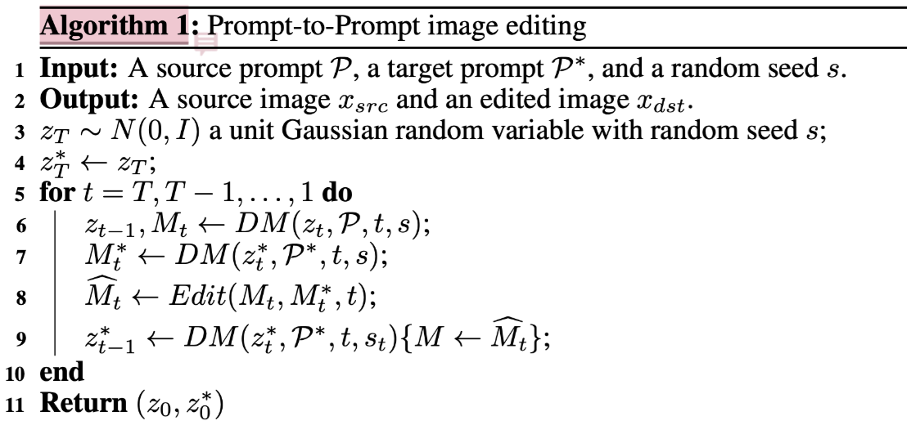
注意到, 这个不带星的z过程中, 从始至终都存在一个完成的生成链, 也就是最后的z0, 就是原始生成的图片, 而z*是edit后的图片。而我们目前跑的代码的实现是, zt 和 zt*在取两个Mt的过程中是共享的, 也就是说, 这里的第六行变为$$z_{t-1}, M_{t} \leftarrow DM(z_{t}^{*}, P, t, s)$$, 而$$z_{t-1}$$是被完整抛弃的。
为了这一点, 我们必须再改代码来验证, 这和condition的改变是有关系的, 具体的部分见“image condition的不同组合。
attention map 到底如何起作用?
前提提要
我们注意到, seed也可能是决定图片布局的一个因素。我们举个例子:
seed case1
seed=248396402679, steps=50
| a cat sitting on a car | a smiling dog sitting on a car |
|---|---|
| a dog sitting on a car | a hamster sitting on a car |
| a tiger sitting on a car | a lion sitting on a car |
我们期望寻找一个seed, 使得不同的prompt得到的图片布局有比价明显的不一致性, 这样才能更加充分体现我们使用attention map进行编辑的用处。
seed case2
seed = 24839640267, steps=50
| a cat sitting on a car | a smiling dog sitting on a car |
|---|---|
| a dog sitting on a car | a hamster sitting on a car |
| a tiger sitting on a car | a lion sitting on a car |
crossattention是否有用? selfattention 是否有用?
cat-tiger
origin:cat, new:tiger , left to right: ss0.0 to ss1.0, up to down: cs0.0 to cs1.0 , 越上面CrossAttention 持续的越久, 越左边, selfAttention持续的越久
图中可以看出， attention map对于空域控制确实是有作用的，而将value替换为老虎的value同时也导致背后车变为车，这也有可能和attention map的扩散有关，即老虎的attention map权重大的空域并不全程在老虎身上。
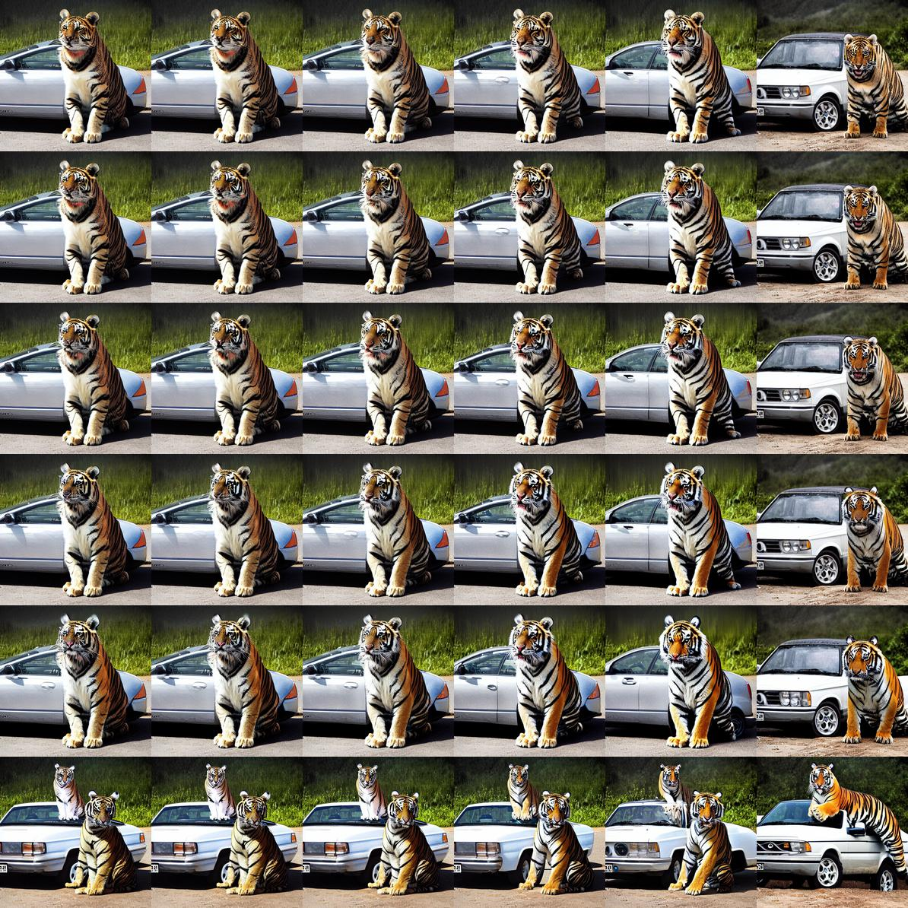
dog-hamster
origin:dog, new:hamster , left to right: ss0.0 to ss1.0, up to down: cs0.0 to cs1.0
左上角, 空域控制过强, 导致无法生成老鼠的形态, 注意到最后一行, 此时crossAttention并无inject, 仅仅selfAttention inject, 此时空域限制就不是很强。有比较好的效果, 但是却和文章中的selfAttention不够搭边了, 最后一步突然跳到原图, 也是有些匪夷所思, 需要再细致分析。
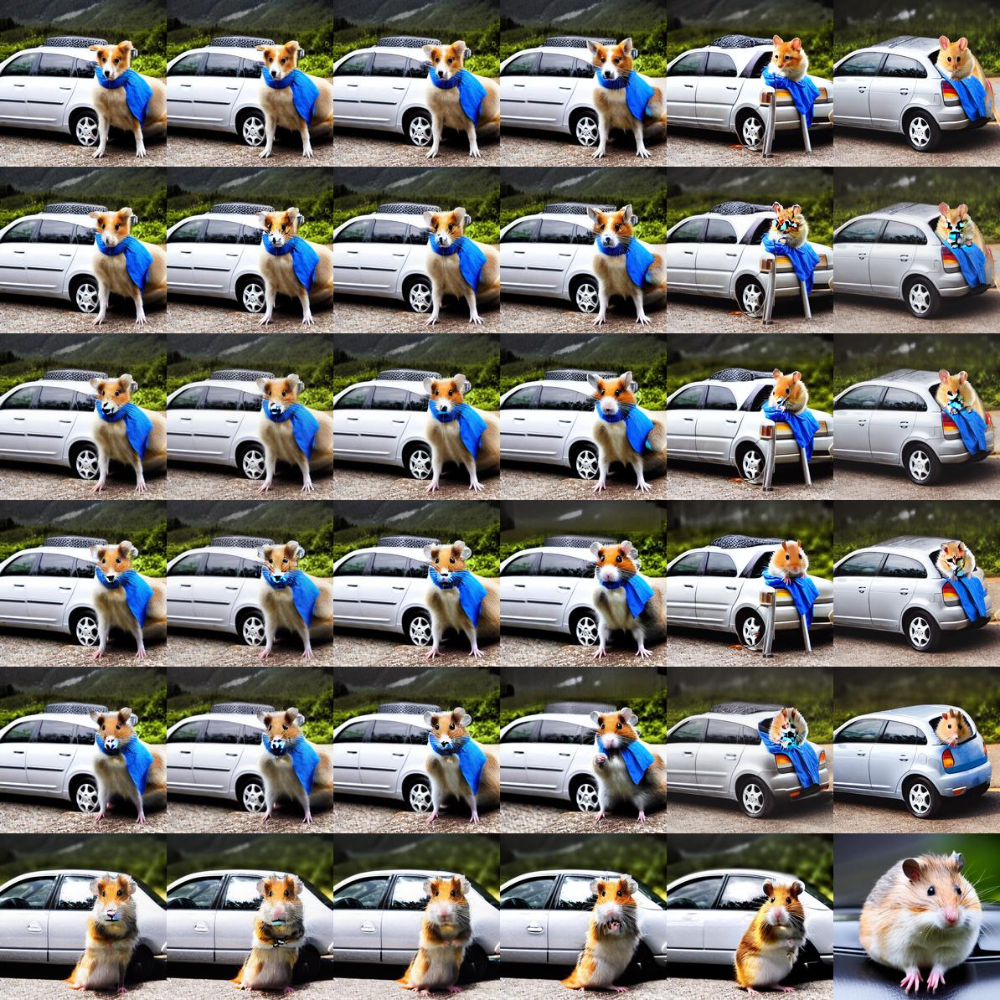
dog-hamster-detail
left to right ss=0.6-1.0, up to down cs=0.6-1.0 ce=se=1
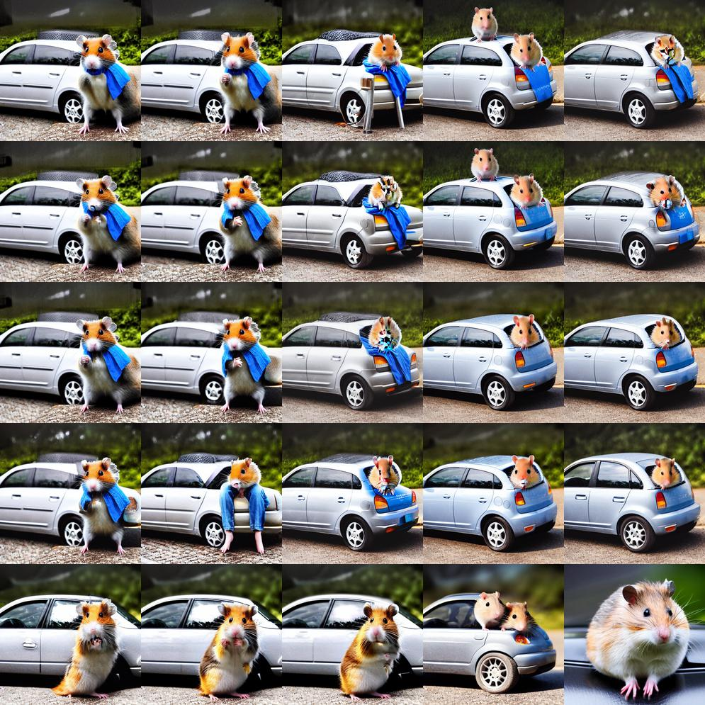
hamster-dog
origin:hamster, new:dog , left to right: ss0.0 to ss1.0, up to down: cs0.0 to cs1.0
这里还是体现出了空域控制很强的效果, 导致狗的毛发成色都和老鼠比较相近。注意到最右边的列, 此时只有crossAttention inject, 没有selfAttention inject, 大幅度的inject范围改变都没有对构图和风格有明显变化, 这也值得思考。最后一行的行为也非常奇怪。
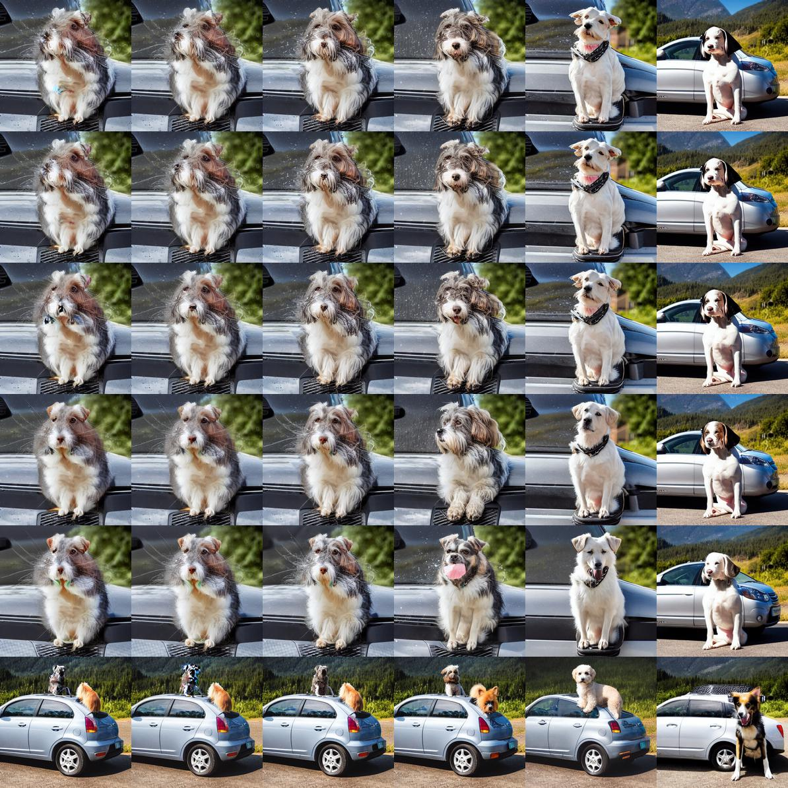
hamster-dog-detail
0.6-1.0, 注意到初始的inject对构图的变化程度还是比较明显的, 例如出现了戴眼镜狗的图片。
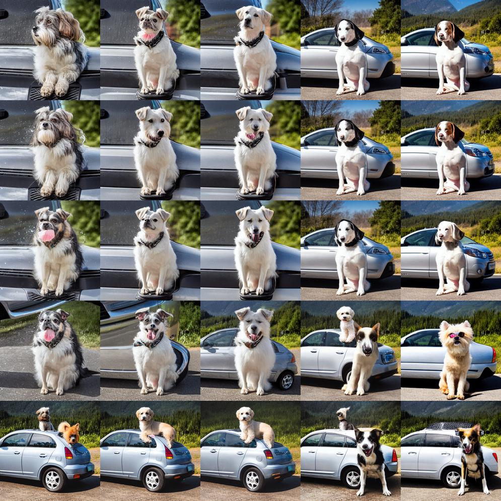
dog-smiling
origin:dog, new:smiling dog , left to right: ss0.0 to ss1.0, up to down: cs0.0 to cs1.0

dog-smiling-detail
left to right: ss0.6 to ss1.0, up to down: cs0.6 to cs1.0

dog-smiling-end
这里说明了, 前期是定结构位置的关键期, 前期一定, 后续再改比较麻烦, 当然, 这也是因为这里代码实现的Attention map是依赖于前一个latent的input的, 而不是独立的。
left to right: ce0.6 to ce1.0, up to down: se0.6 to se1.0, ss=cs=0.3

cake 实验

cake
ss0.7, cs0.7, se=ce=1
| apple | cheese | chocolate | jello | lego | matcha | pistachio | pumpkin |
|---|---|---|---|---|---|---|---|
| 苹果 | 芝士 | 巧克力 | 果冻 | 乐高 | 抹茶 | 开心果 | 南瓜 |
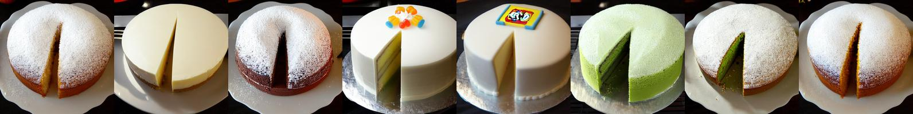
lemon-cheese
ss0.0-1.0 cs0.0-1.0 lemon cheese

lemon-pistachio
ss0.7-1.0, cs0.7-1.0 lemon pistachio

value, map不同组合
以上的矩阵就体现出了value, map的不同组合, 有一定的趋势可以证明map控制位置, value控制内容, 但这还需要image condition的验证。
image condition的不同组合(并行inject)
这里其实就是指并行inject, 同时也解释了算法是否有问题的问题。
hamster-dog-self
left to right: ss0.0 to ss1.0, up to down: cs0.0 to cs1.0, se=ce=1
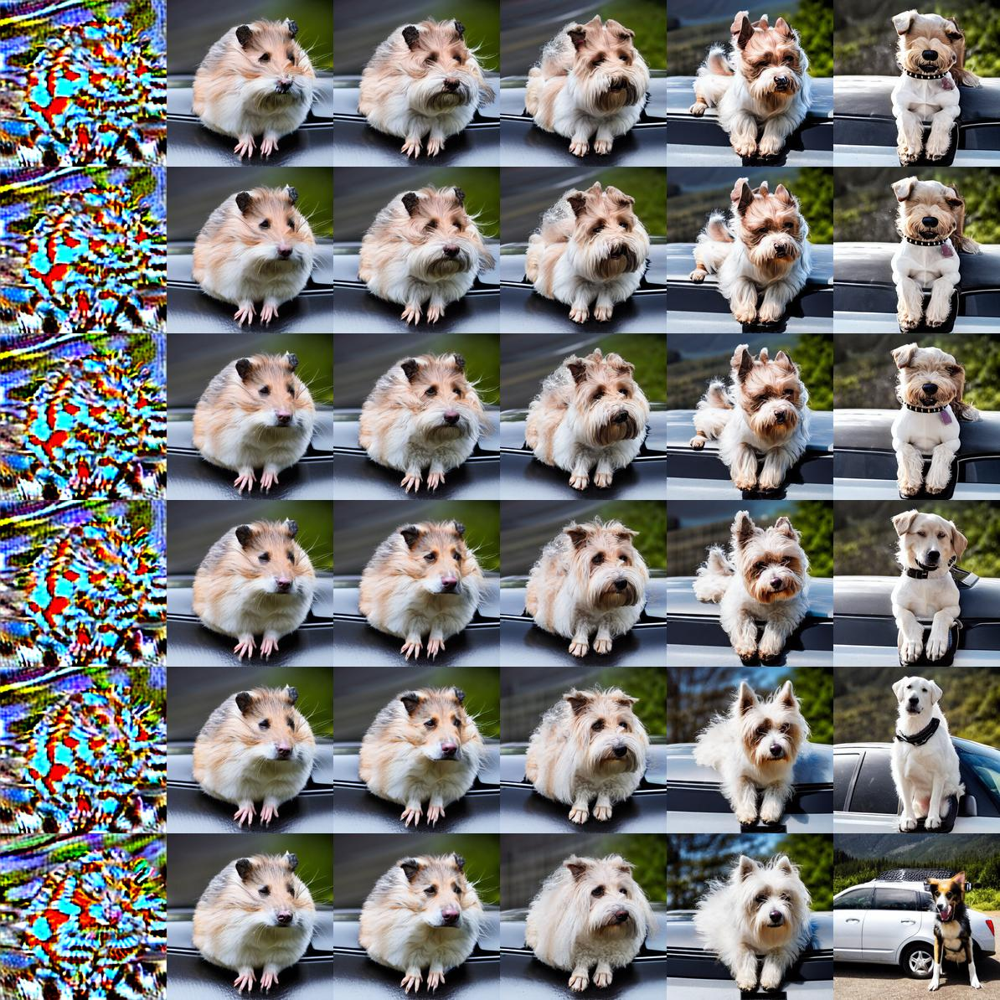
margin
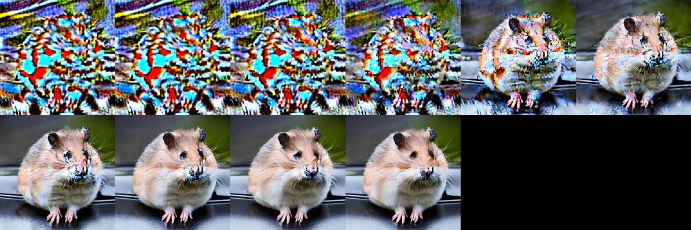
dog-smiling-self
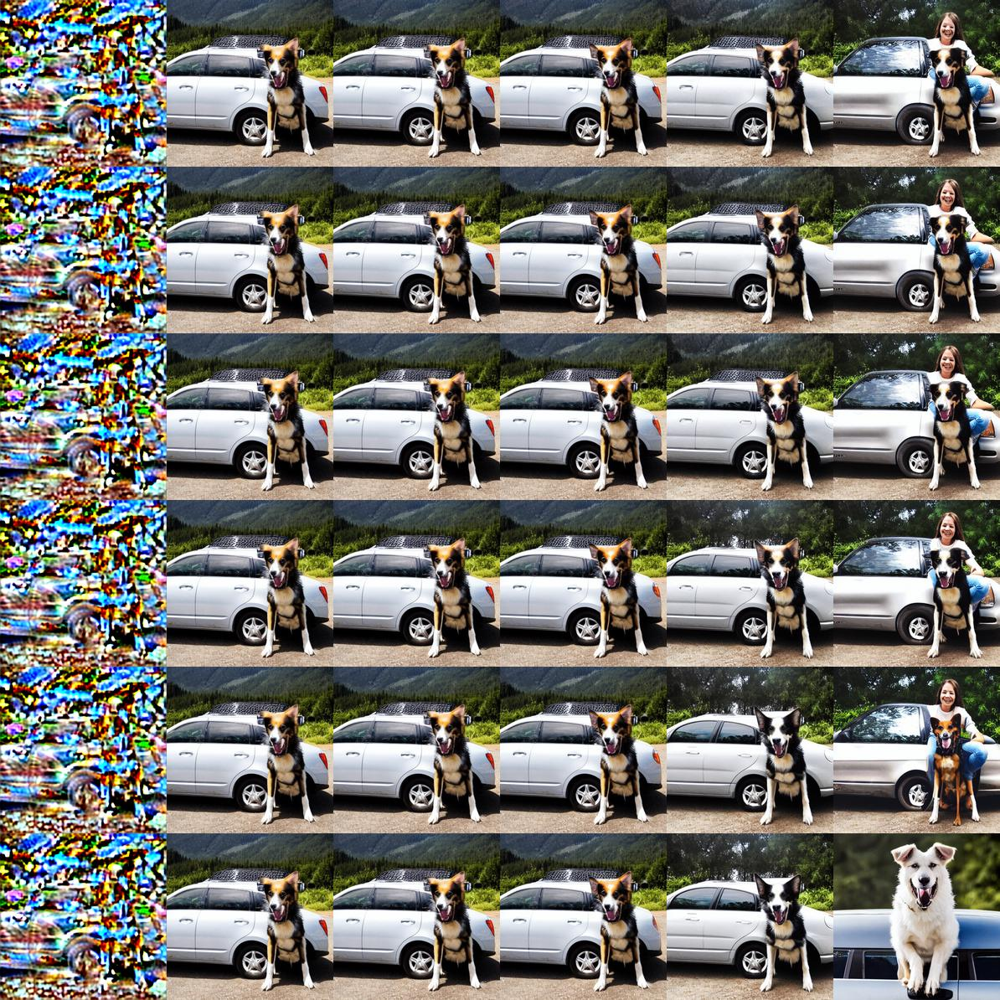
dog-smiling-self
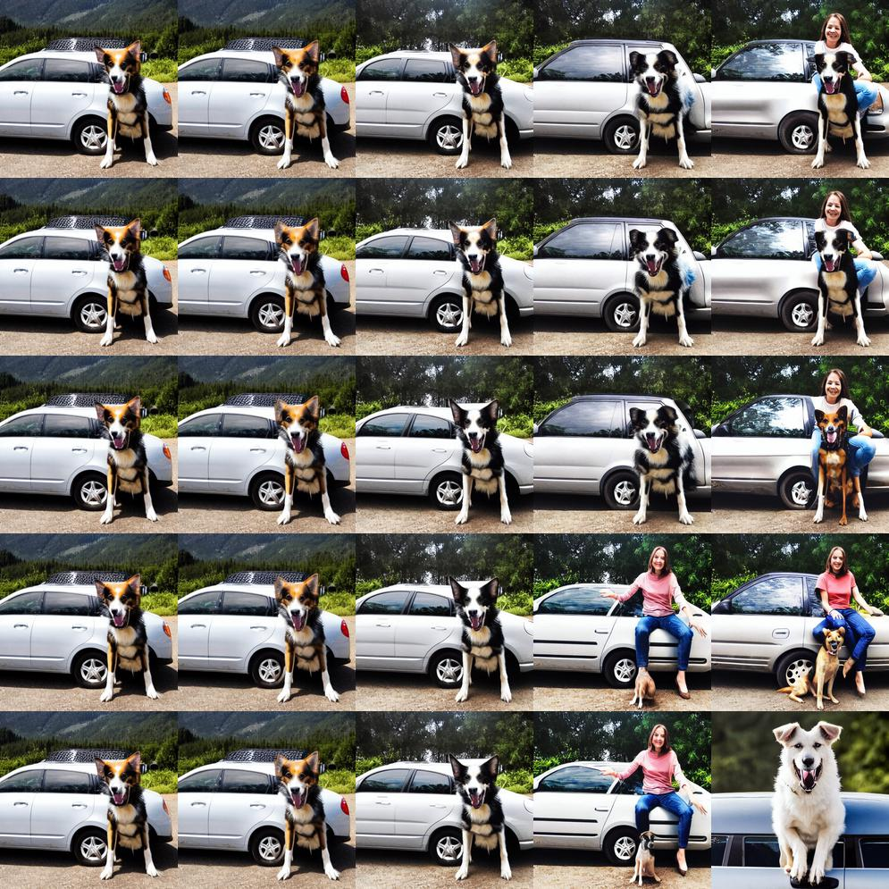
打印所有的生成过程以及attention
手动inject
方法1
实验方法, 选定图片的一块方形区域, 然后在Attention map这个区域中使得该部分的权重增加, 增加方式还有待尝试。
- 只inject 64X64的attention map
- 绝对inject，mast相加后不做softmax，直接乘value
inject scale = 10
这里首先阐明了我们injcet的位置的大致区域， 为暗红色部分。
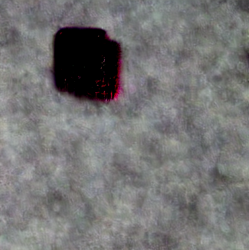
inject scale=4
inject scale=3
值得探索的方向
- self Attention
- 模型结构
- dreambooth
- 动词
- inpainting()
- 再过一次归一化(尝试各种方法)
- 调稳定一些
手动inject结论
- 目前只inject 64X64, inject 32X32 或许效果会更好(已经验证)
- inject 的面积未必能够限制生成动物的面积
- 有一定的控制作用
- 做softmax归一化似乎没有效果, 可能是softmax的维度
结论
- map决定空域, value决定内容基本成立
- 以上二者均受到image condition影响
- 并行inject 更合理
t
z4 z3 z2 z1 z0
猫 ...
t*
z4* z3* z2* z1*
狗 ...
z4 z3 z3end z2 z2end
z3* z2*
问题:
- dog-smiling 出现了人
- 出现像素化
- 控制的不是很理想
注意到的问题
其实生成控制没有很理想
我们注意到代码中给的样例看起来不错, 但是稍微添加一些修改, 就会出现一些问题, 当然这任然需要再回头看一下论文并进行修改。
例如, 原来的实现中, 使用的原条件生成“a cat sitting on a car”, seed=248396402679, 得到如下图片:
attention inject的方式, 参数为"a cat sitting on a car", "a smiling dog sitting on a car", prompt_edit_spatial_start=0.7, seed=248396402679 则如下图:
如果将参数改变为"a cat sitting on a car", "a dog sitting on a car", prompt_edit_spatial_start=0.7,seed=248396402679,steps=50, 则得到如下图片, 比较恐怖:
value, map不同组合, 抛弃selfattention , new_sliced_attention , seq compare